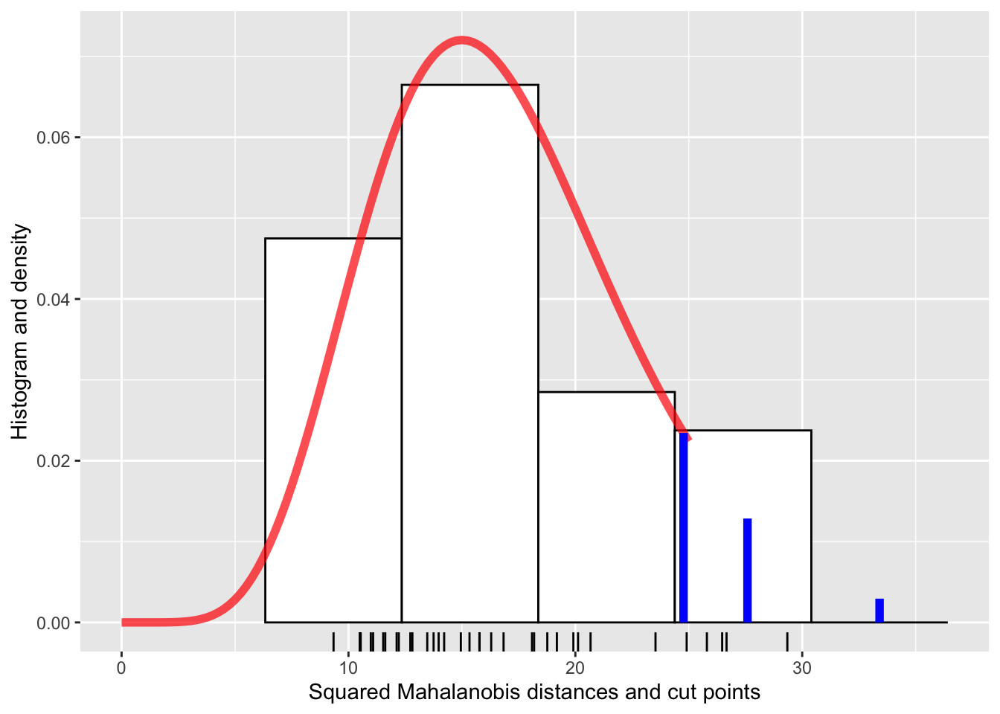
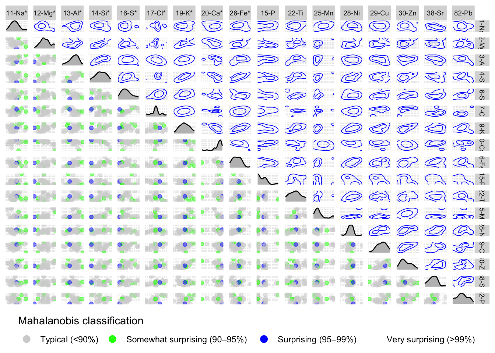
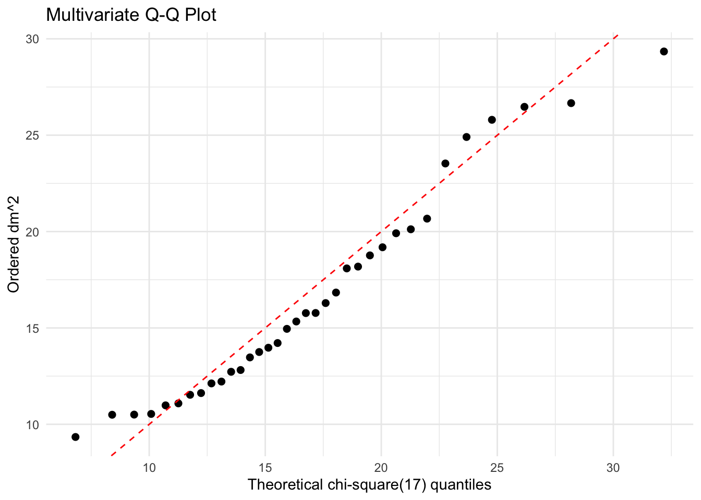
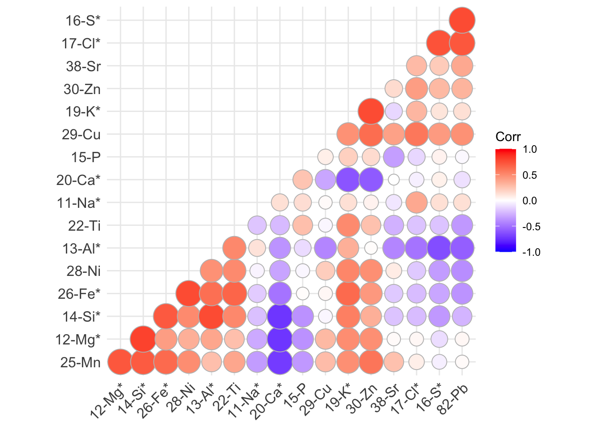
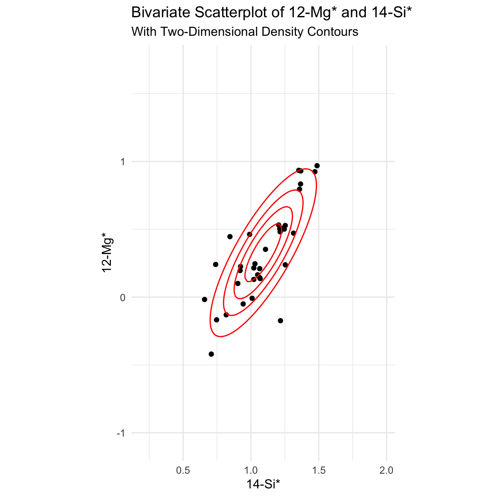
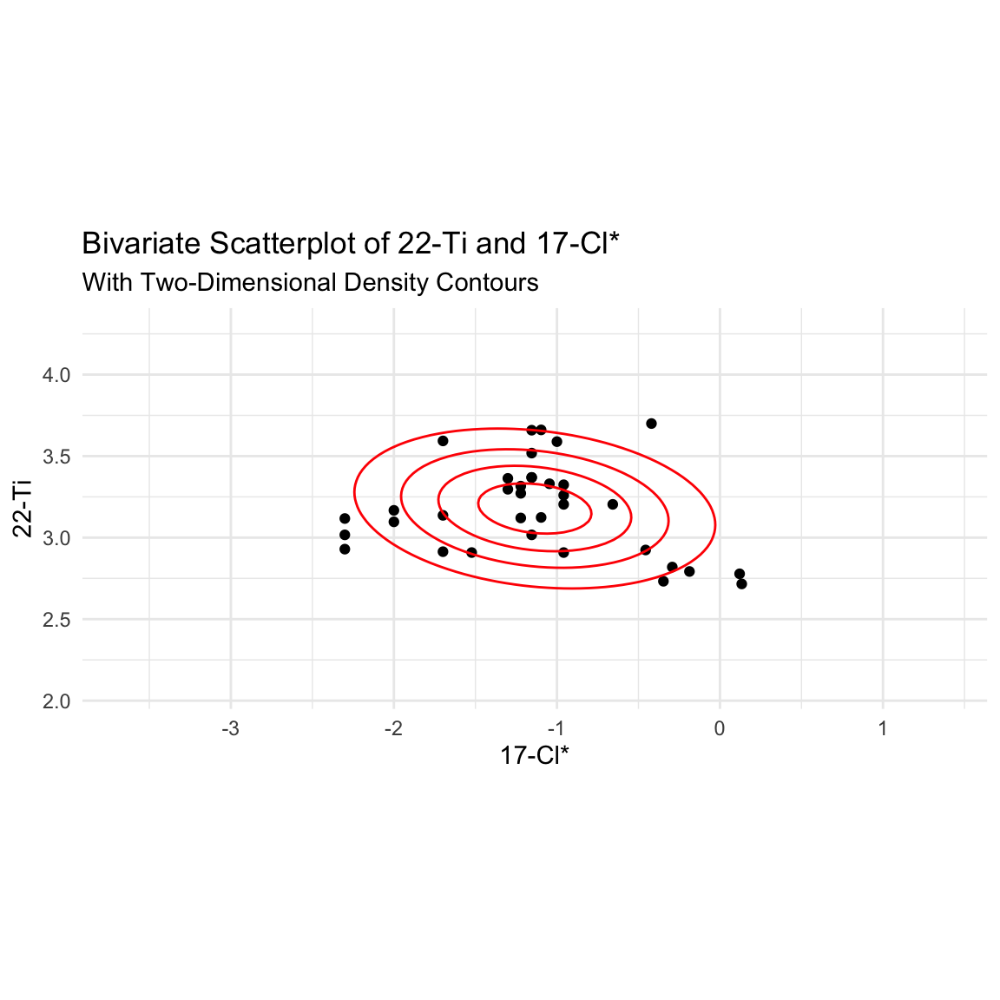
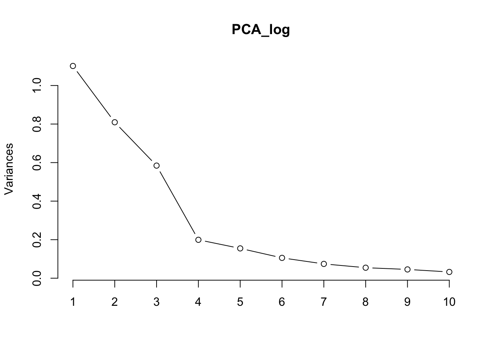
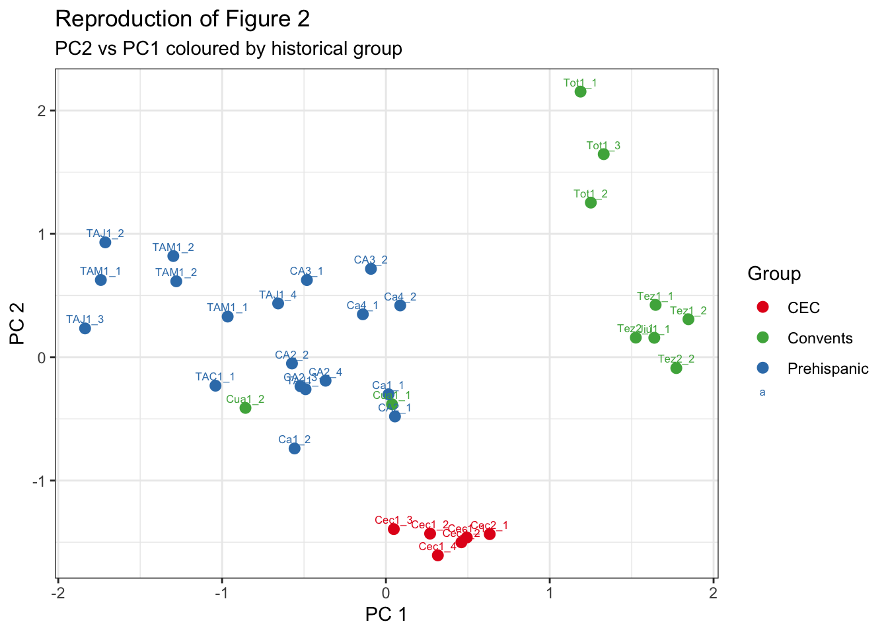
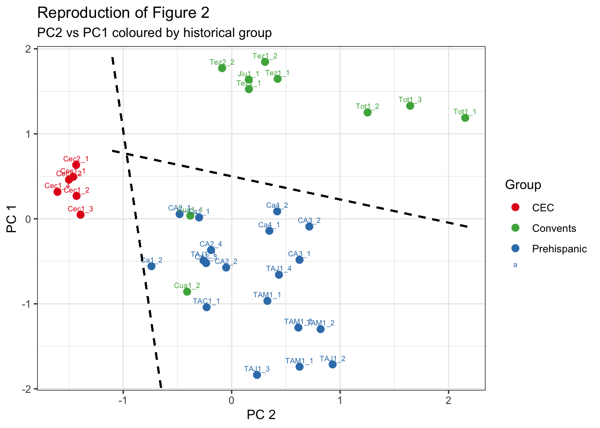

| Elements | 11-Na* | 12-Mg* | 13-Al* | 14-Si* | 16-S* | 17-Cl* | 19-K* | 20-Ca* | 26-Fe* | 15-P | 22-Ti | 25-Mn | 28-Ni | 29-Cu | 30-Zn | 38-Sr | 82-Pb |
|---|---|---|---|---|---|---|---|---|---|---|---|---|---|---|---|---|---|
| Jiu1_1 | 0.29 | 1.76 | 1.66 | 10.70 | 5.23 | 0.65 | 0.76 | 39.30 | 0.62 | 0 | 620 | -120 | -15 | 40 | 29 | 440 | 49 |
| Tot1_1 | 0.84 | 1.74 | 1.85 | 5.49 | 2.17 | 0.35 | 1.64 | 35.10 | 0.61 | 99600 | 840 | -170 | -14 | 27 | 164 | 420 | 59 |
| Tot1_2 | 0.20 | 0.96 | 1.03 | 4.55 | 12.90 | 0.11 | 0.12 | 37.90 | 0.39 | -1200 | 810 | -130 | -11 | -10 | 21 | 1040 | 65 |
| Tot1_3 | 0.45 | 1.62 | 2.97 | 11.60 | 4.75 | 0.38 | 1.71 | 26.40 | 1.64 | 51800 | 5010 | 360 | 18 | 35 | 108 | 460 | 69 |
| Tez1_1 | 0.29 | 0.68 | 1.26 | 5.58 | 9.89 | 0.45 | 0.10 | 41.60 | 0.38 | NA | 540 | -270 | -3 | -8 | -12 | 1430 | 62 |
| Tez1_2 | 0.32 | 0.74 | 1.47 | 6.57 | 8.67 | 0.51 | 0.15 | 41.60 | 0.55 | NA | 660 | -310 | -6 | -9 | 15 | 1310 | 152 |
| Tez2_1 | 1.26 | 2.79 | 1.91 | 7.00 | 1.83 | 1.32 | 0.18 | 48.80 | 0.39 | NA | 600 | -190 | -9 | 19 | -12 | 900 | 49 |
| Tez2_2 | 1.71 | 2.90 | 2.30 | 9.77 | 2.58 | 1.36 | 0.26 | 42.00 | 0.50 | NA | -520 | 310 | -14 | 31 | 44 | 1080 | 49 |
| Cua1_1 | 0.36 | 1.57 | 2.66 | 8.32 | 0.22 | -0.03 | 0.14 | 51.70 | 0.57 | NA | 810 | 330 | 25 | -14 | -14 | 8580 | 21 |
| Cua1_2 | 0.36 | 1.68 | 2.71 | 8.38 | 0.18 | -0.02 | 0.12 | 51.50 | 0.51 | NA | 820 | 240 | 20 | -10 | 14 | 6550 | 1 |
| Ca1_1 | 0.30 | 3.17 | 4.61 | 17.60 | 0.39 | 0.06 | 0.38 | 31.80 | 1.15 | -170 | 2070 | 330 | 26 | 22 | 18 | 560 | 15 |
| Ca1_2 | 0.15 | 3.40 | 4.12 | 16.00 | 0.41 | 0.05 | 0.29 | 34.60 | 1.41 | NA | 1980 | 630 | 32 | -6 | 34 | 430 | 2 |
| CA2_1 | 0.51 | 3.03 | 4.52 | 16.40 | 0.90 | 0.08 | 0.34 | 33.10 | 0.99 | NA | 1330 | 600 | 23 | -4 | 69 | 160 | 9 |
| CA2_2 | 0.64 | 2.96 | 5.80 | 20.60 | 0.66 | -0.07 | 0.59 | 24.20 | 1.74 | -430 | 2340 | 550 | 17 | -6 | 16 | 100 | 2 |
| CA2_3 | -0.29 | 3.19 | 4.51 | 16.30 | 0.43 | -0.07 | 0.32 | 34.20 | 0.75 | NA | 2340 | -260 | -9 | -2 | 8 | 160 | 5 |
| CA2_4 | 0.44 | 3.22 | 4.80 | 17.10 | 0.47 | -0.05 | 0.39 | 32.30 | 0.76 | NA | 2310 | -150 | 14 | -5 | 14 | 210 | 7 |
| CA3_1 | 0.49 | 1.39 | 3.98 | 11.60 | 0.51 | 0.09 | 0.29 | 43.50 | 0.93 | -1300 | 2140 | -360 | 16 | -4 | 14 | 160 | 4 |
| CA3_2 | 0.70 | 1.37 | 3.62 | 11.70 | 1.00 | -0.07 | 0.60 | 42.20 | 0.97 | -1700 | 4560 | -320 | -12 | -10 | 23 | 270 | 7 |
| Ca4_1 | 0.29 | 1.64 | 2.74 | 10.50 | 0.84 | 0.08 | 0.31 | 46.10 | 0.79 | -940 | 4580 | 380 | 22 | -7 | 25 | 1180 | 4 |
| Ca4_2 | 0.33 | 1.46 | 3.08 | 11.20 | 0.52 | 0.07 | 0.24 | 45.50 | 0.78 | -1260 | 3300 | 580 | 18 | -11 | 26 | 850 | 18 |
| Cec1_1 | 0.23 | 6.24 | 3.69 | 22.80 | 1.32 | 0.11 | 0.71 | 17.50 | 2.27 | NA | 2110 | 9120 | 30 | -12 | 60 | 1170 | 7 |
| Cec1_2 | 0.11 | 8.60 | 2.81 | 22.50 | 0.18 | 0.11 | 0.58 | 19.90 | 1.54 | NA | 1820 | 4790 | 23 | 14 | 48 | 1260 | 18 |
| Cec1_3 | 0.56 | 9.30 | 5.29 | 30.70 | 0.19 | 0.06 | 1.05 | 2.88 | 1.32 | NA | 1320 | 1980 | 21 | 21 | 87 | 490 | 10 |
| Cec1_4 | 0.22 | 8.40 | 4.54 | 29.60 | 0.32 | 0.06 | 1.01 | 6.07 | 1.54 | NA | 1870 | 6730 | 26 | 21 | 88 | 810 | 17 |
| Cec2_1 | 0.20 | 6.82 | 3.50 | 23.20 | 1.08 | 0.11 | 0.71 | 17.80 | 1.67 | NA | 1600 | 8630 | 29 | 16 | 57 | 1190 | 13 |
| Cec2_2 | 0.14 | 8.51 | 2.85 | 23.30 | 0.65 | 0.10 | 0.63 | 16.60 | 2.22 | NA | 3880 | 7170 | 28 | 16 | 53 | 1300 | 13 |
| TAM1_1 | -0.29 | 2.25 | 4.08 | 12.80 | 0.15 | -0.02 | 0.26 | 41.10 | 1.49 | -850 | 1370 | -250 | 15 | -3 | 12 | 500 | 6 |
| TAM1_2 | -0.19 | 1.35 | 3.25 | 10.50 | 0.22 | NA | 0.20 | 47.30 | 1.19 | -850 | 1040 | -150 | -12 | -5 | -8 | 300 | 5 |
| TAJ1_1 | 1.49 | 0.67 | 7.43 | 16.50 | -0.16 | -0.07 | 0.43 | 31.70 | 1.38 | NA | 1040 | -280 | 22 | NA | 15 | 740 | 10 |
| TAJ1_2 | -0.20 | 1.26 | 2.48 | 8.00 | 0.10 | NA | -0.06 | 53.10 | 0.54 | -1530 | 850 | -170 | -9 | -3 | 10 | 90 | 3 |
| TAJ1_3 | -0.19 | 3.37 | 4.90 | 17.90 | -0.06 | -0.01 | 0.27 | 31.90 | 0.76 | -590 | 1470 | -140 | 12 | -5 | 8 | 110 | 1 |
| TAJ1_4 | -0.43 | 0.38 | 2.10 | 5.10 | -0.09 | 0.22 | 0.36 | 57.80 | 1.18 | -690 | 1600 | -240 | -29 | -17 | 21 | 570 | 1 |
| TAC1_1 | 0.56 | 1.73 | 4.90 | 17.90 | 0.36 | -0.02 | 0.90 | 27.20 | 5.18 | -1000 | 3920 | 900 | 154 | -12 | 52 | 270 | 1 |
| TAM1_1 | 0.40 | 0.98 | 3.95 | 10.20 | 0.14 | NA | 0.14 | 47.40 | 0.86 | -1320 | 1310 | -250 | -11 | -4 | 12 | 320 | 1 |
| TAM1_2 | 0.41 | 0.89 | 3.32 | 8.76 | 0.16 | -0.01 | 0.14 | 50.70 | 0.61 | -1340 | 1250 | -200 | -14 | -3 | -6 | 340 | 4 |
Group 8 Project
PIXE Analysis on Maya Blue in Prehispanic and Colonial Mural Paintings
Introduction
The original study by Sánchez del Río et al. (2006) investigated Maya Blue pigments in Prehispanic and colonial mural paintings from different archaeological sites. The study analysed 35 mural samples using PIXE (Particle-Induced X-ray Emission) to measure the concentrations of 17 chemical elements, ranging from sodium (Na) to lead (Pb). Principal component analysis (PCA) was then used to investigate patterns in the elemental composition of the samples. The authors reported that approximately 70% of the total variation could be explained by the first three principal components and identified structure associated with three archaeological groups: CEC, Prehispanic, and convent samples.
The aim of the present analysis is to investigate whether similar group structure can be identified in the available data and to assess the reproducibility of the main findings reported by Sánchez del Río et al. (2006). We use descriptive and graphical analyses, multivariate diagnostics, PCA, and cluster analysis to examine variation among the mural samples and evaluate whether the patterns reported in the original study can be reproduced. Particular attention is given to the PCA structure and the archaeological interpretation of the resulting groups.
Methodology
Data
Data for this analysis contains 35 samples of different types of murals from across regions of southern mexico (Sanchez del Rio et al, 2006). This data can be found in Table 1. of Sanchez del Rio et al’s paper from 2006.
Data Transformation
The elemental concentration data were preprocessed before the multivariate analysis. The elements are measured on vastly different scales, with some reported as percentages and others as micrograms per gram (µg/g). Following Sánchez del Río et al. (2006), a base-10 logarithmic transformation was applied to reduce these large differences in scale and make the elemental concentrations easier to compare. Some concentrations in Table 1 are reported in parentheses ( ), which represent values below the limit of detection (LOD). Since numerical estimates are still provided, these estimated concentrations are retained for the analysis, and the parentheses are removed. Lastly, we conducted a transformation of both NA and 0 values found in the data. Sanchez del Rio et al. (2006) described that values that were given as 0’s aren’t treated as 0’s and were instead concentrations that were below the detection limit and, as such, were instead very small concentrations of elements. Moreover, we cannot do a (_{10}) transformation of the data if observations contain 0’s. We can therefore transform these 0’s into estimates that can be used with the log10 transformation and retain these small concentrations. Therefore, we run a function that runs through each numerical column, filters out values that are less than or equal to zero, ignores NAs (na.rm = TRUE), finds the smallest remaining positive number, and divides it by two. Finally, it checks every cell in that column. If a cell is either NA or exactly 0, it substitutes it with the replacement value.
Following the data transformation, several multivariate statistical methods were used to investigate the elemental composition of the mural samples. A quantitative exploratory analysis was first done to compare the original and log transformed concentrations of each element with each other. A qualitative exploratory analysis was then conducted to compare the log transformed concentrations graphically with notched box plots.
Potentially unusual multivariate observations were investigated using squared Mahalanobis distances. These distances measure how far each observation lies from the multivariate centre of the data while accounting for the covariance between the elemental concentrations. The distances were compared with the 90%, 95%, and 99% quantiles of a chi-squared distribution with 17 degrees of freedom to identify increasingly unusual observations.
Multivariate normality was assessed graphically using a multivariate Q-Q plot of the ordered squared Mahalanobis distances against theoretical chi-squared quantiles. Mardia’s multivariate skewness and kurtosis tests were also used to formally assess departures from multivariate normality.
Principal component analysis (PCA) was then performed on the covariance matrix of the log-transformed elemental concentrations. The covariance matrix was used to remain consistent with the methodology of Sánchez del Río et al. (2006). The scree plot and cumulative proportion of variance explained were used to assess the number of principal components required to adequately represent the variation in the data. The first two principal component scores were subsequently plotted and compared with Figure 2 of the original study to determine whether similar archaeological group structure could be reproduced.
Results
Quantitative Descriptive Analysis
| Descriptive Statistics of Elemental Concentrations | ||||||||
| Non-Transformed | ||||||||
| Element | Mean | Standard D. | Median | Minimum | 1st Quartile | Inter-Q Range | 3rd Quartile | Maximum |
|---|---|---|---|---|---|---|---|---|
| 11-Na* | 0.45 | 0.37 | 0.33 | 0.11 | 0.22 | 0.28 | 0.50 | 1.71 |
| 12-Mg* | 2.91 | 2.53 | 1.74 | 0.38 | 1.36 | 1.84 | 3.20 | 9.30 |
| 13-Al* | 3.45 | 1.40 | 3.32 | 1.03 | 2.57 | 1.94 | 4.52 | 7.43 |
| 14-Si* | 13.91 | 6.86 | 11.60 | 4.55 | 8.57 | 9.18 | 17.75 | 30.70 |
| 16-S* | 1.71 | 3.02 | 0.47 | 0.06 | 0.18 | 1.02 | 1.20 | 12.90 |
| 17-Cl* | 0.19 | 0.33 | 0.07 | 0.01 | 0.04 | 0.07 | 0.11 | 1.36 |
| 19-K* | 0.47 | 0.40 | 0.32 | 0.06 | 0.19 | 0.42 | 0.62 | 1.71 |
| 20-Ca* | 35.78 | 13.29 | 37.90 | 2.88 | 29.45 | 16.35 | 45.80 | 57.80 |
| 26-Fe* | 1.15 | 0.87 | 0.93 | 0.38 | 0.61 | 0.84 | 1.45 | 5.18 |
| 15-P | 4,802.86 | 18,640.58 | 85.00 | 85.00 | 85.00 | 1015.00 | 1100.00 | 99,600.00 |
| 22-Ti | 1,846.57 | 1,241.87 | 1,470.00 | 520.00 | 845.00 | 1380.00 | 2225.00 | 5,010.00 |
| 25-Mn | 1,359.71 | 2,545.58 | 310.00 | 120.00 | 220.00 | 370.00 | 590.00 | 9,120.00 |
| 28-Ni | 21.69 | 24.18 | 17.00 | 3.00 | 12.00 | 12.00 | 24.00 | 154.00 |
| 29-Cu | 12.37 | 9.71 | 10.00 | 1.00 | 5.00 | 11.50 | 16.50 | 40.00 |
| 30-Zn | 34.77 | 34.45 | 21.00 | 6.00 | 13.00 | 37.00 | 50.00 | 164.00 |
| 38-Sr | 1,021.43 | 1,703.83 | 500.00 | 90.00 | 285.00 | 840.00 | 1125.00 | 8,580.00 |
| 82-Pb | 21.69 | 31.00 | 9.00 | 1.00 | 4.00 | 15.50 | 19.50 | 152.00 |
There are significant variations in concentration among the elements, according to the descriptive statistics. Many samples include very high quantities of calcium (Ca), although the concentrations of numerous trace elements are substantially lower. Some samples from Totimehuacan have exceptionally high levels of phosphorus (P). For instance, P is 51,800 micrograms per gram in (Tot1_3) and 99,600 micrograms per gram in (Tot1_1). Since there is insufficient evidence to regard these values as measurement errors, they were retained because they were present in the original data. We can see in the percentage concentrated elements that silicon (Si) is contains the highest concentration median at 11.60%, as well as the largest maximum of 30.7%. This extremely large compared to other concentration medians ranging from 0.07% to 3.32%. From the ratio concentrated elements phosphorus has the largest maximum at 99,600 but has a median, minimum, and 1st quartile of 85. This can be attributed to the data transformation due to the largest amount of NA’s in is concentrations. Other Large concentrations come from Titanianum (Ti), Magnesium (Mn), and Strontium (Sr). The significant variations in concentration between items support the adoption of a log transformation before the multivariate analysis.
| Descriptive Statistics of Elemental Concentrations | ||||||||
| Log10 Transformation | ||||||||
| Element | Mean | Standard D. | Median | Minimum | 1st Quartile | Inter-Q Range | 3rd Quartile | Maximum |
|---|---|---|---|---|---|---|---|---|
| 11-Na* | −0.44 | 0.28 | −0.48 | −0.96 | -0.65 | 0.35 | -0.30 | 0.23 |
| 12-Mg* | 0.33 | 0.35 | 0.24 | −0.42 | 0.13 | 0.37 | 0.51 | 0.97 |
| 13-Al* | 0.50 | 0.19 | 0.52 | 0.01 | 0.41 | 0.24 | 0.65 | 0.87 |
| 14-Si* | 1.09 | 0.22 | 1.06 | 0.66 | 0.93 | 0.32 | 1.25 | 1.49 |
| 16-S* | −0.23 | 0.61 | −0.33 | −1.22 | -0.73 | 0.81 | 0.08 | 1.11 |
| 17-Cl* | −1.14 | 0.63 | −1.15 | −2.30 | -1.41 | 0.45 | -0.96 | 0.13 |
| 19-K* | −0.47 | 0.35 | −0.49 | −1.22 | -0.72 | 0.51 | -0.21 | 0.23 |
| 20-Ca* | 1.50 | 0.26 | 1.58 | 0.46 | 1.47 | 0.19 | 1.66 | 1.76 |
| 26-Fe* | −0.02 | 0.25 | −0.03 | −0.42 | -0.21 | 0.38 | 0.16 | 0.71 |
| 15-P | 2.53 | 0.78 | 1.93 | 1.93 | 1.93 | 1.11 | 3.04 | 5.00 |
| 22-Ti | 3.18 | 0.28 | 3.17 | 2.72 | 2.93 | 0.42 | 3.35 | 3.70 |
| 25-Mn | 2.67 | 0.55 | 2.49 | 2.08 | 2.34 | 0.43 | 2.77 | 3.96 |
| 28-Ni | 1.23 | 0.27 | 1.23 | 0.48 | 1.08 | 0.30 | 1.38 | 2.19 |
| 29-Cu | 0.95 | 0.38 | 1.00 | 0.00 | 0.70 | 0.52 | 1.22 | 1.60 |
| 30-Zn | 1.38 | 0.37 | 1.32 | 0.78 | 1.11 | 0.59 | 1.70 | 2.21 |
| 38-Sr | 2.74 | 0.45 | 2.70 | 1.95 | 2.45 | 0.60 | 3.05 | 3.93 |
| 82-Pb | 0.96 | 0.61 | 0.95 | 0.00 | 0.60 | 0.69 | 1.29 | 2.18 |
After the log transformation, the elemental concentrations are on more comparable scales, reducing the influence of the very large raw values. Differences between elements are still present, but no single variable dominates simply because of its measurement scale. This makes the transformed data more suitable for the multivariate analyses that follow. We can see that Si and P both still have the largest maximums of there respective concentrations, but we can now see that that P observation is much larger. Moreover we can see that the concentrations of all ratio elements are much larger then the elements measured originally in percentages in terms of there maximum value. We can also see this difference in respective medians, with percentage elements ranging from -1.22 to 0.66 compared to ratio of 0.00 to 2.72.
Graphical and Qualitative Analysis

The log-scale box plots show that transformation reduces, but does not remove, the pronounced differences in spread among elements. The trace variables remain particularly heterogeneous, while several major matrix components are more concentrated. We can see that Chlorine has the lowest mean of the 17 elements Titanium has the largest median. A number of the elements have outliers including Manganese with 4, Chlorine with 3, Phosphorous, Calcium and Nickel with 2, and finally Sodium and Aluminium having 1. This can be expected as certain types of murals Notable due to the transformation of the data, and the large amount of NA’s found in the samples for concentrations of Phosphorous, it contains a very large inter quartile range with, as well as having its median, 1st quatile, a minimum value all being 1.93.
Are There Surprising Observations?

Upper.Quantiles Values
1 90th Quantile 24.76904
2 95th Quantile 27.58711
3 99th Quantile 33.40866
typical somewhat Suprising very
30 4 1 0 Sample dM surprise
1 TAJ1_4 29.34327 Suprising
2 Tot1_1 26.66402 somewhat
3 TAJ1_1 26.47125 somewhat
4 Jiu1_1 25.79784 somewhat
5 Cec1_3 24.90653 somewhatThe squared Mahalanobis distances were used to identify samples with unusual combinations of elemental concentrations. Most observations have relatively smaller Mahalanobis distance, while a smaller number have larger distance and may be considered potentially unusual. The 90%, 95%, and 99% chi-square cut-offs provide increasing levels of evidence for identifying unusual multivariate observations. These samples are retained in the analysis because an unusual observation is not necessarily an error; it may represent genuine differences in mural composition. From the output we can see that 1 observation is very surprising , 4 are somewhat surprising , while the remaining 30 are typical distances. From the output, TAJ1_4 was identified as a surprising multivariate observation, with a squared Mahalanobis distance of approximately 29.34327. This exceeds the 95th percentile of the \(\chi^2_{17}\) distribution (27.59), but remains below the 99th percentile (33.41). This indicates that TAJ1_4 has an surprising combination of elemental concentrations relative to the overall multivariate distribution.

The pairs plot shows substantial dependence between several of the elemental concentrations. Specifically, Mg and Si display a strong positive association, as shown by the narrow, upward-oriented density contours, while other pairs, such as Ca and K, show evidence of a negative association. Several trace-element relationships exhibit less regular density contours, suggesting more complex bivariate distributions. The marginal density plots also show asymmetry and irregularity for several elements, providing graphical evidence against multivariate normality. Observations classified as somewhat surprising or surprising by their squared Mahalanobis distances tend to lie away from the main concentration of observations across several pairwise combinations. However, the surprising observation is not consistently extreme for any single element, indicating that its large Mahalanobis distance is primarily associated with an unusual multivariate combination of elemental concentrations rather than a single extreme measurement.
Can you assume that the data follows a multivariate normal distribution?

Test Statistic p.value Method MVN
1 Mardia Skewness 1095.997 0.003 asymptotic ✗ Not normal
2 Mardia Kurtosis -0.434 0.664 asymptotic ✓ Normal Test Variable Statistic p.value Normality
1 Anderson-Darling 11-Na* 0.416 0.315 ✓ Normal
2 Anderson-Darling 12-Mg* 0.503 0.192 ✓ Normal
3 Anderson-Darling 13-Al* 0.438 0.278 ✓ Normal
4 Anderson-Darling 14-Si* 0.318 0.523 ✓ Normal
5 Anderson-Darling 16-S* 0.587 0.119 ✓ Normal
6 Anderson-Darling 17-Cl* 0.673 0.072 ✓ Normal
7 Anderson-Darling 19-K* 0.214 0.837 ✓ Normal
8 Anderson-Darling 20-Ca* 2.670 <0.001 ✗ Not normal
9 Anderson-Darling 26-Fe* 0.317 0.524 ✓ Normal
10 Anderson-Darling 15-P 3.143 <0.001 ✗ Not normal
11 Anderson-Darling 22-Ti 0.328 0.506 ✓ Normal
12 Anderson-Darling 25-Mn 2.809 <0.001 ✗ Not normal
13 Anderson-Darling 28-Ni 0.812 0.032 ✗ Not normal
14 Anderson-Darling 29-Cu 0.233 0.783 ✓ Normal
15 Anderson-Darling 30-Zn 0.690 0.065 ✓ Normal
16 Anderson-Darling 38-Sr 0.450 0.261 ✓ Normal
17 Anderson-Darling 82-Pb 0.412 0.323 ✓ NormalThe multivariate normality assumption is not fully satisfied. Mardia’s skewness test is significant with p-value = 0.003, providing evidence against multivariate normality, although Mardia’s kurtosis test is not significant with p-value = 0.664. Through individual Anderson-Darling normality tests we find that Calcium, phosphorus, Magnesium, and Nickel (Ni) are not normally distributed, which subsequently has effected the multivariate normality of the data. The multivariate Q-Q plot is approximately linear through much of the central region but shows some departures from the reference line. Therefore, results that rely on multivariate normality, specifically the chi-square interpretation of Mahalanobis distances, should be interpreted with caution. From this we can therefore conclude that the data does not follow a multivariate normal distribution ## Can we find groups in this data?

The correlogram shows the direction and strength of the relationships among the log-transformed elemental concentrations. Red circles represent positive correlations and blue circles represent negative correlations, while larger and darker circles indicate stronger relationships. Several element pairs show clear associations, suggesting that some elemental concentrations tend to vary together across the mural samples. Elements Mn, Mg, Si, Fe, Ni, Al, Ti, K, and Zn are all positively correlated with each other, meaning as one increases the other increase. Moreover Na, Ca, P, S, and Pb are all negatively or uncorrelated with those same elements, meaning when those elements increase, Na, Ca, P, S, and Pb tend to decrease or remain unchanged, such as between Pb and both Mg and Mn.
To examine these patterns more closely, two contrasting relationships from the correlogram are considered below.
Relationship between 12-Mg* and 14-Si*

The bivariate scatterplot shows a clear positive association between the log-transformed concentrations of Mg and Si. The upward-sloping density contours support this pattern: samples with higher Si concentrations generally also have higher Mg concentrations. The relatively concentrated contours suggest that this relationship is fairly strong compared with some of the other element pairs.
Relationship between 22-Ti and 17-CI*

As we can see from the Bivariate Scatter plot of 22-Ti and 17-Cl, there is a negative association between the log-transformed concentrations of the two elements. the downward oreientation of the density contours suggest that samples with higher Cl concentrations generally have lower Ti concentrations. However, this relationship is relatively weaker than the relationship shown between 12-Mg and 14-Si as indicated by the dispersion of points and broader contour lines.
PCA
We can now conduct a Principle component analysis of the data to find how many groups are in the data. The Covariance matrix was used instead of the correlation matrix to keep inline with the original studies PCA.

| PC | Eigenvalue | Proportion.of.Variance…. | Cumulative.Variance…. |
|---|---|---|---|
| PC1 | 1.101 | 34.02 | 34.02 |
| PC2 | 0.809 | 25.00 | 59.03 |
| PC3 | 0.584 | 18.05 | 77.08 |
| PC4 | 0.199 | 6.16 | 83.23 |
| PC5 | 0.155 | 4.78 | 88.01 |
| PC6 | 0.105 | 3.26 | 91.27 |
| PC7 | 0.074 | 2.29 | 93.56 |
| PC8 | 0.054 | 1.68 | 95.25 |
| PC9 | 0.046 | 1.41 | 96.65 |
| PC10 | 0.032 | 1.00 | 97.65 |
| PC11 | 0.023 | 0.72 | 98.38 |
| PC12 | 0.022 | 0.68 | 99.05 |
| PC13 | 0.015 | 0.46 | 99.51 |
| PC14 | 0.008 | 0.25 | 99.76 |
| PC15 | 0.005 | 0.14 | 99.90 |
| PC16 | 0.003 | 0.08 | 99.98 |
| PC17 | 0.001 | 0.02 | 100.00 |
The first three principal components explained 77.08% of the total variance, with PC1, PC2, and PC3 accounting for 34.02%, 25.00%, and 18.05%, respectively. These results are broadly consistent with the original study, which reported 34.88%, 24.95%, and 11.32% for the first three components, and 71.15% of total variance (Sanchez del Rio et al, 2006). The first two components are particularly similar. However the third principle component in our analysis is noticeably larger then the percentage of variance in the original study. We can now plot PC1 versus PC2 to look at the clustering of the 35 mural samples to find clear support for or against the original study.

The clearest pattern is the separation of the CEC samples from the other two groups. The CEC observations form a very tight cluster at strongly negative PC2 values, suggesting that their elemental compositions are relatively similar to one another but distinct from the other samples. The Convent samples generally lie toward positive PC1, particularly the Tot and Tez samples, while the Prehispanic samples are concentrated mainly toward negative PC1. However, there is some overlap between the Convent and Prehispanic groups near the centre of the plot, particularly for samples such as Cua1_2. Therefore, the PCA indicates group structure, but not complete separation.
The arrows help explain this pattern. Elements whose arrows point in similar directions are positively associated in the first two PCs, while arrows pointing in opposite directions indicate contrasting contributions. In particular, S, Cl and Pb point strongly toward positive PC1, in approximately the direction of many of the Convent samples. This suggests that these elements contribute to the separation of the Convent samples from many of the Prehispanic samples. P, on the other hand, has a strong positive PC2 loading and therefore contributes more strongly to vertical separation. Mn points strongly in the negative PC2 direction.
Can we reproduce Fig.2

The PCA plot broadly reproduces Figure 2 from Sánchez del Río et al. (2006). The CEC samples (Santa Cecilia Acatitlán) form a tight, well-separated cluster, consistent with their distinct non-fresco preparation technique. The Prehispanic and Convent groups occupy partially overlapping regions of the PC1–PC2 plane, suggesting that, despite their temporal separation, both groups employed similar mural painting techniques. It is also worth noting that we can observe that despite being listed in the Mexican Franciscan convents group, both Cuauhtinchan samples cluster around the Prehispanic murals, suggesting its work is more closely related to this type of mural. This was also seen in the original papers figure, however there is more noticeable overlap with this figure compared to the original.
Discussion
The analysis of elemental concentrations within Maya blue samples provides evidence of structure, although the groups are not completely distinct. Taking a log transformation of the data helped to account for large differences in concentration levels between the elements, which is consistent with the approach used in the original study. However, the data cannot be assumed to follow a multivariate normal distribution, as it fails Mardia’s skewness test, despite the kurtosis result showing consistency with normality. Several of the individual elements also showed evidence of non-normality; these elements were calcium, phosphorus, manganese and nickel. This should be taken into consideration when interpreting the multivariate results.
The data also showed some surprising observations. TAJ1_4 had the biggest Mahalanobis distance and was classified as surprising, while Tot1_1, TAJ1_1, Jiu1_1 and Cec1_3 were all classified as somewhat surprising. The clustering analysis provides evidence of some meaningful groups in the data, with the CEC samples forming a distinct group. This is consistent with the authors’ observation of these samples containing unusually low calcium concentrations and likely not being produced with the fresco technique. The samples also show a less clear distinction between predominantly Prehispanic and Colonial samples, as these two groups have substantial overlap rather than being completely separated.
We agree with the authors’ conclusions about the zones in Figure 2. The original PCA differentiated samples into broad Prehispanic and Colonial patterns and identified CEC as a distinct cluster. They also concluded that the data did not form well-defined groups. We were able to reproduce a similar graph, providing evidence of these findings. Elemental composition provides information about the historical period and the technique used, but the overlap between samples means that the groups cannot be treated as completely separated categories. The authors’ hypothesise that the overlap may be due to similarities in the painting techniques between the Prehispanic and Colonial periods.
Overall, the results show some structure in the Maya blue samples, but the groups are not completely distinct. The CEC samples are clearly separated, while the Prehispanic and Colonial samples overlap. Figure 2 supports the authors’ conclusion that the zones represent broad patterns rather than clearly defined groups.
References
Andonie, R., and I. Dzitac. 2010. “How to Write a Good Paper in Computer Science and How Will It Be Measured by ISI Web of Knowledge.” International Journal of Computers, Communications & Control V (4): 432–44. https://doi.org/10.15837/ijccc.2010.4.2493.
Frery, A. C., L. Gomez, and A. C. Medeiros. 2020. “A Badging System for Reproducibility and Replicability in Remote Sensing Research.” IEEE Journal of Selected Topics on Applied Earth Observations and Remote Sensing 13: 4988–95. https://doi.org/10.1109/JSTARS.2020.3019 418.
Sánchez del Río, M., Martinetto, P., Solís, C. & Reyes-Valerio, C. (2006), ‘PIXE analysis on Maya blue in Prehispanic and colonial mural paintings’, Nuclear Instruments and Methods in Physics Research Section B: Beam Interactions with Materials and Atoms 249(1–2), 628–632.